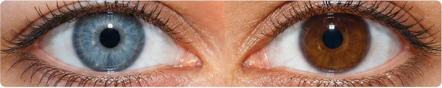

Inserisci i genotipi
Per ciascuno SNP, scegli con un clic il genotipo rilevato. La casella selezionata indica 0, 1 o 2 copie dell’allele contato; NA indica un dato mancante.
I sei marcatori IrisPlex
Selezione diretta del genotipo| # | Gene | SNP | Allele contato | Genotipo (clicca per selezionare) |
|---|
Seleziona i genotipi e premi “Mostra probabilità predette”.
Probabilità predette del colore degli occhi
Calcolate dal modello locale a tre categorie
Informazioni sul modello
Regressione logistica multinomiale regolarizzata (L2) con HERC2 categorico, addestrata su 238 individui con fenotipo osservato nella colonna Colore_BUIO.
Gruppi: Blu (A + AG), Verde/Castano-verde (V + CV), Marrone (CC + CS + N).
Limiti e validazione del modello
Le metriche sono ottenute tramite validazione incrociata stratificata a 5 fold. La regolarizzazione è stata selezionata sulla stessa CV: le stime sono esplorative e possono risultare ottimistiche. Non è stata svolta una validazione indipendente esterna.
Gli SNP mancanti (eccetto HERC2, obbligatorio) sono sostituiti con 0 copie dell’allele contato, secondo il preprocessing della versione precedente. La presenza di dati mancanti riduce l'affidabilità della stima. Le percentuali non sono certezze diagnostiche e non vanno utilizzate per identificazione forense individuale senza ulteriore validazione.
Questo modello è addestrato sul dataset fornito e non coincide con il software ufficiale Erasmus MC.